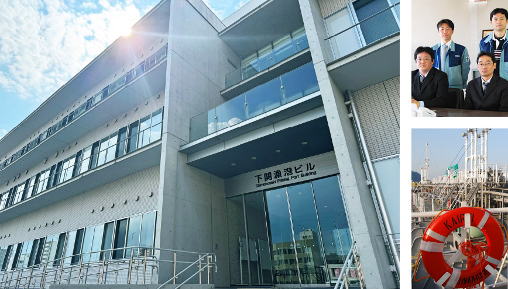

瀬戸内中央汽船株式会社は、国内の港と港を結び
効率的な輸送を通じて
みなさまへ大切なエネルギーを、運び続けます。

基本情報
| 設立 | 2007年 |
|---|---|
| 社名 | 瀬戸内中央汽船株式会社 |
| 所在地 | 山口県下関市大和町1丁目16番1号 下関漁港ビル211 号 |
| TEL | 083-267-6660 |
| FAX | 083-267-6664 |
設立趣旨
当社は、海事局殿及び業界で今日注目されている協業化・グループ化を目指す会社で、8名の内航海運業
者の後継者及び各者の共通のオペレーターである上野トランステック株式会社殿のご主導の下、2007年6月21日に設立登記致しました。
海嶺は、3778 総トン、4999Ｄ/W 型の限定近海( 非国際) 白油兼ケミカルタンカーです。( 平成20年7月就航)
役員
| 代表取締役会長 | 花田 和浩 |
|---|---|
| 代表取締役社長 | 谷村 優 |
| 専務取締役 | 白石 弥 |
| 常務取締役 | 末田 晃史 |
| 取締役 | 佐藤 典彦 |
| 監査役 | 栁川 岳 |